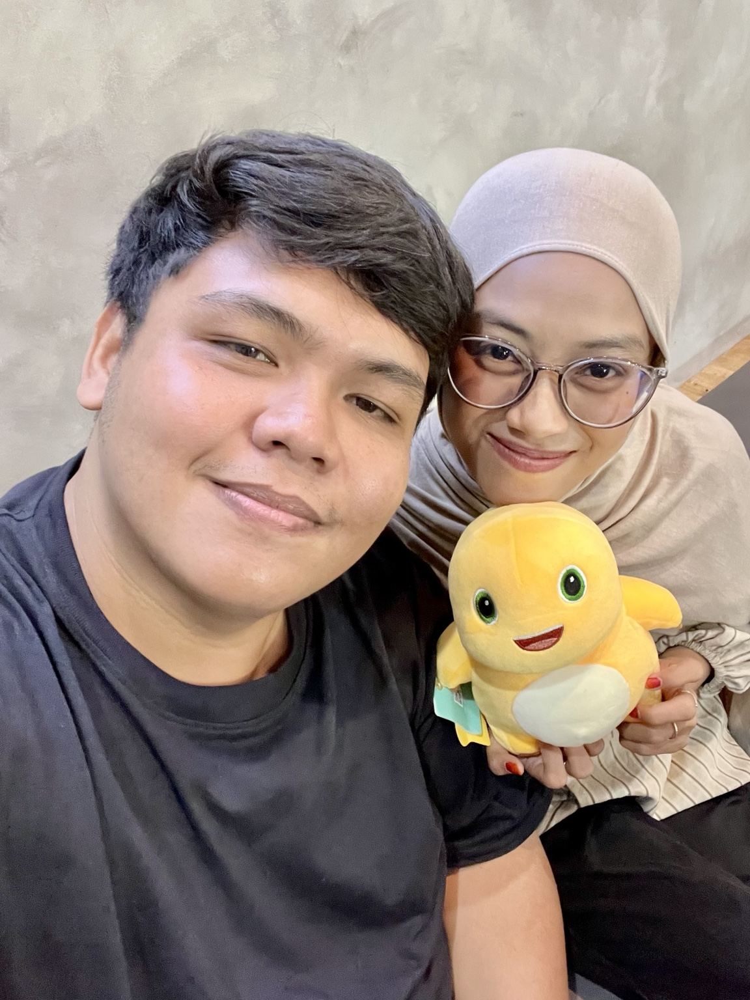
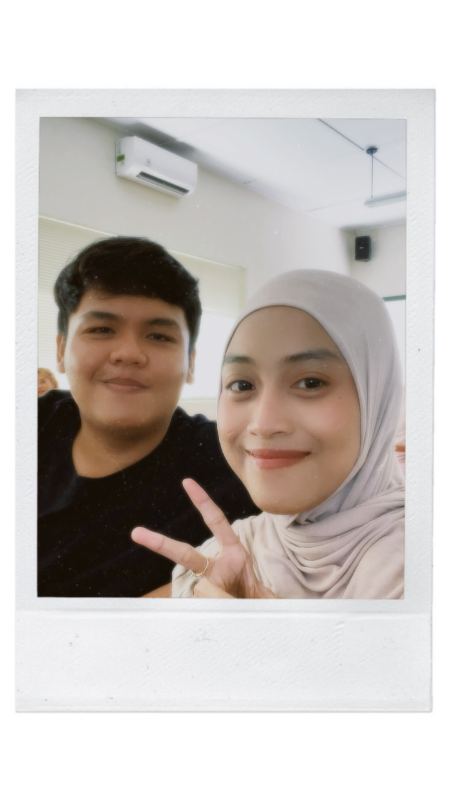

Sebelum kamu mulai menjalani hari, mas ada sesuatu buat kamu.

“Mas beruntung banget ada April di hidup mas.”
Dari sekian banyak orang di dunia, entah kenapa mas akhirnya ketemu sama April.
Selalu punya cara membuat hari mas terasa lebih ringan.
Bahkan cerita random pun tetap pengen mas denger.
Bukan karena sempurna. Tapi karena April adalah April.
“Sekarang mungkin mas masih di bawah. Tapi mas gak mau berhenti di sini.”
Mas Pengen terus berjuang, memperbaiki diri, dan suatu hari nanti bisa berdiri lebih tinggi — bukan hanya untuk mas, tapi juga untuk masa depan yang kita bayangkan.
Meski ada hari yang mudah, dan ada juga hari yang terasa berat.
Pelan-pelan belajar menjadi versi diri yang lebih siap.
Sampai nanti kita gak perlu lagi menitipkan rindu lewat layar.
April,
Maaf kalau sampai hari ini mas masih belum bisa membahagiakan April seperti yang mas inginkan.
Maaf kalau mas masih berada di bawah, masih banyak kurangnya, dan masih banyak hal yang harus mas perjuangkan.
Tapi justru itu, mas gak mau berhenti. April jadi salah satu alasan terbesar yang membuat mas ingin terus bangun, terus maju, terus berjuang, dan terus memperbaiki diri.
Mas pengen suatu hari nanti bisa lihat lagi ke belakang dan bilang, “ternyata semua perjuangan itu ada hasilnya.” Dan kalau hari itu datang, mas pengen April ada di sana.
Terima kasih sudah ada di hidup mas. Terima kasih sudah menjadi seseorang yang begitu berarti.
Mas sayang banget sama April. ❤️
Gak perlu lagi “selamat pagi” lewat chat. Cukup saling lihat dan tersenyum.
Ada seseorang yang bisa mas cari setelah hari yang panjang.
Bukan siapa yang paling cepat, tapi bagaimana kita sampai bersama.
Tempat kita bisa menjadi diri sendiri dan tetap merasa aman.
Suatu hari nanti, kita lihat kembali semua ini dari tempat yang sama.

“Kalau kamu lupa seberapa berarti kamu buat mas, buka halaman ini lagi.”
“Dan semoga suatu hari nanti, mas gak perlu lagi ngucapin semua ini lewat Chat atau Call. Karena April sudah ada di sebelah mas.”